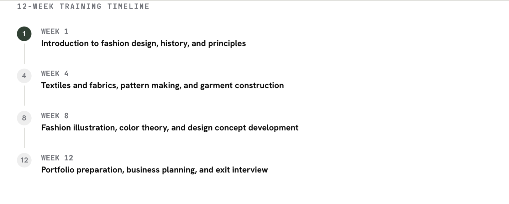
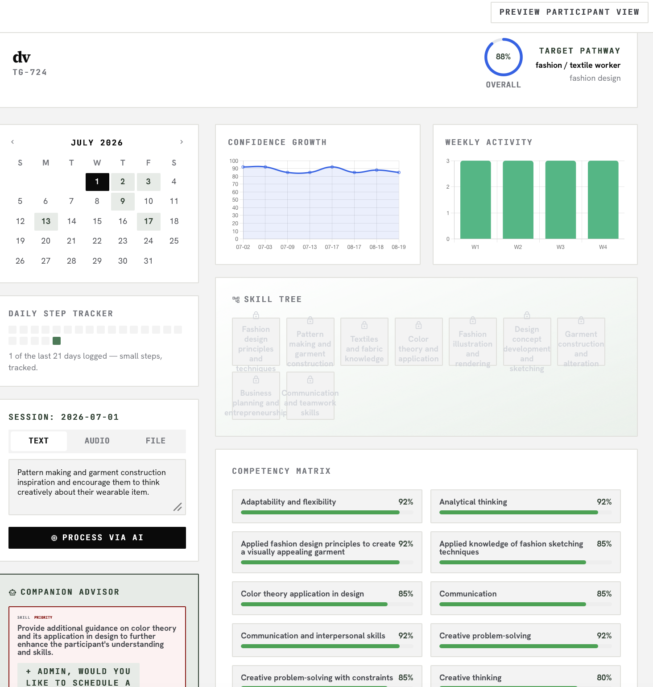

A platform used to track and analyse the skills people in-custody develop while working on projects in custodial environments.
A tool will track the skills, visually display it on a platform, showcase progress and real job opportunities on the market the individual may reach. By showcasing skills, progress in interactive and innovative way it will also boost confidence levels and motivation, which in turn will reduce reoffending rates.
The platform is also designed to help staff members manage the process more efficiently, replacing current manual processes.
Part of the project is aimed at research on the influence of the tool on the confidence levels of people in-custody and how it can help them find a job after release.
Additionally, how the tool can help to decrease reoffending rates and improve employment rates in the UK.

